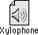
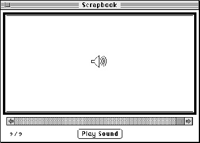

The User Interface for Sound
As you have seen, the Macintosh system software provides you with a wide array of easy-to-use sound-input and sound-output services. With very little programming, you canThe system software has already defined a set of user interface elements and metaphors that are designed to facilitate the integration of sound into the Macintosh graphical user interface. In general, you should use the existing system software services to present the standard interface elements designed by Apple. For example, if you want to have the user record through the available sound-input hardware, you can call the
- play the user's system alert sound or any sound contained in a sound resource or file
- record sounds through the available sound-input hardware
- convert text into speech
SndRecordfunction, which displays the sound recording dialog box (shown in Figure 1-12 on page 1-17). That dialog box contains controls that are modelled on the buttons typically found on an audio tape recorder or a video cassette recorder. In this way, the system software draws on the user's knowledge of how to operate a tape recorder and uses it as a metaphor for recording sounds on Macintosh computers.The system software also provides visual representations of sounds themselves. In some cases, sounds are represented by their names only, as in the Alert Sounds control panel (shown in Figure 1-11 on page 1-16). In other cases, sounds are represented by icons. For example, the icon for a Finder sound looks like the one shown in Figure 1-15. All Finder sounds are represented by the same icon; they are distinguished from each other by their names.
Figure 1-15 An icon for a Finder sound

If the user copies or cuts a sound from the available system alert sounds and then pastes the sound into the Scrapbook, the sound is shown as in Figure 1-16.
Figure 1-16 A sound in the Scrapbook

As you can see, the metaphor in both cases is that of a speaker, a sound-producing device familiar to most computer users. If you need to design icons to represent sounds created by your application, you might want to use (or suitably adapt) these existing metaphors. For example, if your application supports document annotations with recorded voices or other sounds, you can display a speaker icon within the document. Clicking or double-clicking the icon should result in playing the sound.
Keep in mind that applications that play sound should allow users to turn off sound output, because there might be users who object to it or environments where it is inappropriate. Also, there might be cultural biases or preferences associated with certain sounds. Thus, if your application plays specific sounds, you should store them as resources, which can be easily modified for local regions, or if they are very large, in sound files, which you can replace easily during localization.